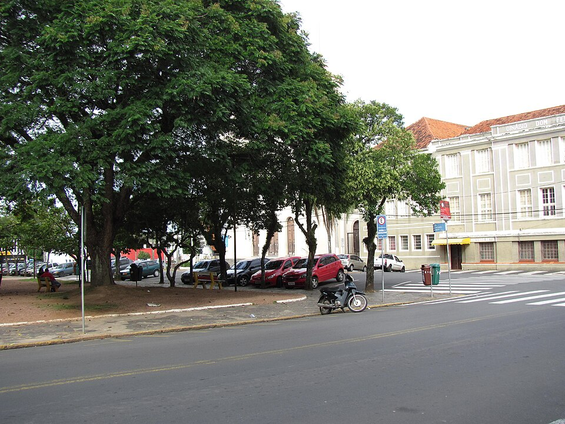

Gravataí é um município brasileiro do estado do Rio Grande do Sul, localizando-se a norte da capital do estado, distando desta cerca de 23 km, sendo um dos 32 integrantes da Região Metropolitana de Porto Alegre (RMPA). Ocupa uma área de 468,288 km², sendo 121,37 km² em perímetro urbano, e sua população foi contada no ano de 2022 em 265 074 habitantes, classificado então como o sexto mais populoso do estado e o terceiro da RMPA.
É a 4ª maior economia do Rio Grande do Sul, destacando-se pela forte presença industrial (como a fábrica da General Motors) e crescimento no setor de serviços e imobiliário.
